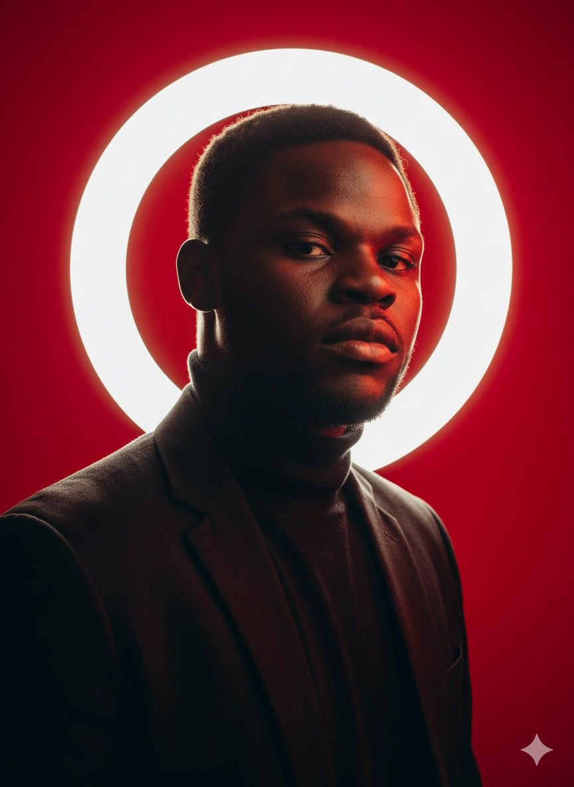

à propos de moi
Bonjour! je m'appelle prosdi Mulala et je suis étudiant dynamique et motivé en
informatique à l'udbl. Passionné par le developpment web, l'intelligence artificielle, et le
design graphique, je suis constament à la recherche de nouvelles opportunités
d'apprentissage et de defis stimulants.
Au cours de mes études, j'ai envoyé de solides compétences en programmation. je suis
une personne rigoureuse, Créative et j'aime travailler en équipe pour atteindre des objectifs
communs. Mon objectif est de contribuer à des projets innovants, trouver un stage, et
maitriser le framework laravel.
Mes compétences
| CATEGORIE | COMPETENCES | NIVEAU |
|---|---|---|
| programmation | HTML,CSS,javascrip,python | avancé |
| Design | Figma,Photoshop(bases) | intermédiaire |
| langes | franceais(natif), Anglais(fluide) | avancé |
| Outils | git,VS vode, suite office | avancé |
| soft skills | communication, résolution de problemes, Autonomie | Expert |